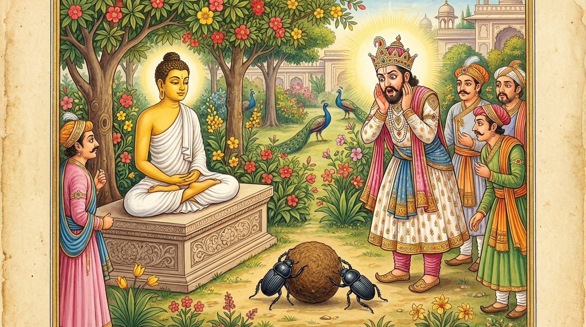

7. අස්සක ජාතකය (207)
“අයමස්සක රාජෙන” යන මේ දේශනාව බුදුරජාණන් වහන්සේ දෙව්රම් වෙහෙරෙහි වැඩවාසය කරන සමයෙහි, පැරණි බිරිඳගේ පෙළඹවීමක් මුල් කරගෙන වදාළ සේක. බුදුරජාණන් වහන්සේ විසින් “මහණ! නුඹ කලකිරුණේ සත්යදැයි?” විමසන ලදුව ඒ භික්ෂුව “එසේය ස්වාමීනි” යි කී කල්හි, “කවුරුන් විසින් කලකිරවන ලදදැයි?” විමසූ විට “පෙර අඹුව විසින්” යයි කීවේය. ඉක්බිති ඔහුට බුදුරජාණන් වහන්සේ “මහණ! ඒ ස්ත්රියගේ ඔබ ගැන දැන් ආදරයක් නැත. පෙරත් ඔබ ඇය නිසා මහත් දුකට පැමිණියේ ය” යි වදාරා අතීත කථාව ගෙනහැර දැක්වූ සේක.
පෙර කසී රට පෝතල නම් නුවර අස්සක නම් රජ කෙනෙක් රජය කරවීය. ඒ රජතුමාට උබ්බරී නම් අගමෙහෙසියක් වූවාය. ඈ ප්රියමනාපය, මනා රූප සම්පත්තියෙන් යුතුය, දැකුම්කලුය, මිනිස් රූප සම්පත්තිය ඉක්මවා සිටිය ද දිව්ය රූපශෝභාවට නොපැමිණියාය. කල් යෑමෙන් ඈ මියගියාය. ඇගේ අභාවයෙන් රජතුමා ශෝකයෙන් මැඩුනේ දුක් දොම්නස් ඇත්තේ විය. රජතුමා ඇගේ මෘත දේහය ඔරුවක තැන්පත් කරවා තෙල් ආදිය දම්මවා ඇඳ යට තබ්බවා නිරාහාරව හඬමින් වැළපෙමින් හොත්තේය.
- මව්පියෝ ද
- සෙසු නෑයෝ ද
- ඇමතිවරු ද
- බමුණු ගහපති ආදීහු ද,
“මහරජ සෝක නොකරන්න. සංස්කාර ධර්ම අනිත්යය” යි යනාදිය කියමින් කරුණු හඟවන්නට උත්සාහ කළ ද එය කිරීමට නොහැකි වූහ. වැලපෙන ඔහුට හත් දිනක් ගත විය. එකල්හි අප මහබෝසතාණන් වහන්සේ පඤ්ච අභිඥා හා අෂ්ට සමාපත්තිලාභී තවුසෙක්ව හිමාල වනයෙහි වාසය කරන්නාහු, ආලෝකය වඩා දිවැසින් දඹදිව දෙස බලන්නාහු, එසේ වැළපෙන ඒ රජු දැක “මොහුට මා විසින් පිහිට විය යුතුය” යි සිතා, සෘද්ධි බලයෙන් අහසට පැන නැගී රජුගේ උයනෙහි බැස මඟුල් ගල්තලාව මතුවෙහි රන්පිළිමයක් මෙන් හුන්නාහුය.
ඉක්බිති පෝතලි නුවර වැසි එක් බමුණු මානවයෙක් උයනට ගියේ බෝසතාණන් වහන්සේ දැක වැඳ හුන්නේය. බෝසතාණන් වහන්සේ ඔහු සමග පිළිසඳර කථාකොට “මානවය! කෙසේද? රජතුමා දැහැමිදැයි?” විචාළ සේක. “එසේය ස්වාමීනි! රජතුමා දැහැමිය. නමුත් රජතුමාගේ බිසව කලුරිය කළාය. එතුමා ඇගේ මෘතදේහය ඔරුවක තැන්පත් කරවා වැළපෙමින් වැතිරී සිටියි. අද ඔහුගේ හත්වෙනි දවසයි. නුඹවහන්සේ රජතුමා මෙබඳු දුකින් නොමුදවන්නේ ඇයි? නුඹවහන්සේලා වැනි සිල්වතුන් සිටිද්දී රජතුමා මෙබඳු දුකක් විඳීම යුක්තිසහගත ද?” “මානව! මම රජතුමා නොහඳුනමි. ඉදින් වනාහි හෙතෙම අවුත් මගෙන් විමසන්නේ නම්, මම මොහුට බිසව උපන් තැන කියා රජතුමාගේ ඉදිරිපිටදීම ඇය ලවා කථා කරවන්නෙමි.” “එසේනම් ස්වාමීනි! රජතුමා මෙහි කැඳවාගෙන එනතෙක්, නුඹවහන්සේ මෙහිම වැඩසිටිනු මැනවැ” යි කියා බෝසතාණන් වහන්සේගේ ප්රතිඥාව ගෙන, රජතුමා සමීපයට ගොස් ඒ කාරණාව කියා “ඒ දිවැස් ඇත්තාගේ සමීපයට යන්නට වටී” යයි කීවේය.
රජතුමා “උබ්බරී බිසව දකින්නට ලැබෙන්නේ ය” යි සතුටු සිත් ඇත්තේ රථයට නැගී එහි ගොස් බෝසතාණන් වහන්සේට වැඳ එකත්පසෙක හුන්නේය. “ඇත්තද, ඔබතුමා දේවීන් වහන්සේ උපන් තැන දන්නෙහුදැයි?” විචාළේය. “එසේම මහරජතුමනි” යි කී සේක. “කොහි උපන්නීද?” “මහරජ, ඇය වනාහි රූපශ්රීයෙන් මත්ව ප්රමාදයට පැමිණ යහපත් ක්රියා නොකොට මේ රජ උයනෙහිම ගොම කෘමි යෝනියෙහි (ගොම පණුවකු වී) උපන්නී ය” යි කීහ. “මම එය නොඅදහමි” යි රජු කීය. “එසේනම් ඔබට පෙන්වා ඇය ලවා කථා කරවන්නෙමි” යි කීහ. “හොඳයි කථා කරවනු මැනවි” යි කීය. බෝසතාණන් වහන්සේ තමන්ගේ ආනුභාවයෙන් “ගොම කෘමියන් දෙදෙනා ගොම පිඩු දෙකක් පෙරළ පෙරළා රජුගේ ඉදිරියට එත්වා” යි ඔවුන්ගේ පැමිණීම සිදුකළහ. ඔවුහු එසේම ආවාහුය. බෝසතාණන් වහන්සේ ඌ පෙන්වමින්, “මහරජතුමනි! මේ ඔබතුමාගේ උබ්බරී දේවියයි. ඔබ අතහැර දමා ගොම පණුවාගේ පසුපස එයි. ඇය බලව” යි කීහ. “ස්වාමීනි! උබ්බරී ගොම කෘමි යෝනියෙහි උපන්නීයයි කීම නම් මම නොපිළිගමි” යි කීය. “මහරජතුමනි! ඇය ලවා කථා කරවන්නෙමි.” “ස්වාමීනි! කථා කරවනු මැනවි.”
බෝසතාණන් වහන්සේ තමන්ගේ ආනුභාවයෙන් ඇය ලවා කථා කරවමින් “උබ්බරී” යයි කීහ. ඈ මිනිස් බසින් “ඇයි ස්වාමීනි” යි කීවාය. “තී අතීත ආත්ම භාවයේදී කවර නම් තැනැත්තියක් වූවාද?” “ස්වාමීනි, අස්සක රජුගේ උබ්බරී නම් අගමෙහෙසිය වූයෙමි.” “දැන් ඔබට ප්රිය අස්සක රජද? නැතිනම් ගොම කෘමියාද?” “ස්වාමීනි, ඒ මගේ පෙර ජාතියයි. එකල මම මේ උයනේ අස්සක රජු සමග රූප, ශබ්ද, ගන්ධ, රස, ස්පර්ශ යන පස්කම් සැප අනුභව කරමින් හැසුරුනෙමි. දැන් වනාහි භවයෙන් වැසීගිය කාලයේ පටන් ඒ රජතුමා මට කවරෙක් වේද? මම වනාහි දැන් අස්සක රජ මරා ඔහුගේ ගෙල සිඳි ලේ මගේ සැමියා වන ගොම කෘමියාගේ පාවල තවරන්නේ ය” යි කියා පිරිස මැද මිනිස් බසින් මේ ගාථා කීවාය.

“මා විසින් කැමති වන ලද, ප්රිය සැමියා වූ අස්සක නම් රජු සමග පෙර මේ පෙදෙසෙහි මා විසින් හැසිරෙන ලදි.”
“එහෙත්, අළුතින් ඇති වූ සැප දුක් දෙකින් පැරණි (කලින් තිබූ) සුව දුක් දෙක වසනු ලැබේ. එහෙයින් අස්සක නම් රජුට වඩා මේ ගොම පණුවාම මට අතිශයින් ප්රිය වේ.”
එහි අර්ථය මෙසේය: ‘අයමස්සකරාජෙන දෙසො විචරිතො මයා’ යනු, මේ රමණීය උයන් පෙදෙසෙහි පෙර කල්හි මම අස්සක රජු සමග හැසිරුණෙමි. ‘අනුකාමය කාමෙන’ යන තැන ‘අනු’ යනු නිපාත මාත්රයකි. මා විසින් කැමති වන ලද ඔහු ද, ඔහු විසින් කැමති වන ලද මම ද යන දෙදෙනා සමග යන අර්ථයි. ‘පියෙන’ යනු ඒ ආත්ම භාවයෙහි ප්රිය වූ (සැමියා) ය. ‘නවෙන සුඛදුක්ඛෙන පොරාණං අපිධීයති’ යනු, “ස්වාමීනි, අලුත් සැපයෙන් පරණ සැපය ද, අලුත් දුකෙන් පැරණි දුක ද වසනු ලැබේ (යටපත් කරනු ලැබේ). මෙය ලෝකයේ ධර්මතාවයයි” යන්න දක්වයි. ‘තස්මා අස්සකරඤ්ඤාව කීටො පියතරො මම’ යනු, යම් හෙයකින් අලුත් සැප දුක්වලින් පැරණි සැපදුක් වැසී යයි ද, එහෙයින් අස්සක රජතුමාට වඩා සිය ගුණයකින් දහස් ගුණයකින් මට මේ ගොම කෘමියාම (පණුවාම) වඩාත් ප්රිය බවයි.
එය ඇසූ අස්සක රජතුමා පසුතැවිලි වී, උයනෙහි සිටියදීම උබ්බරීගේ කුණපය බැහැර කරවා, හිස සෝදා නා, බෝසතුන්ට වැඳ, නගරයට පිවිස වෙනත් කුමාරිකාවක් අග මෙහෙසිය කරගෙන දැහැමෙන් රාජ්යය කරවීය. බෝසතාණන් වහන්සේ ද රජුට අවවාද දී ඔහුගේ ශෝකය දුරුකොට හිමාල වනයට ම වැඩම කළ සේක.
බුදුරජාණන් වහන්සේ මේ ධර්ම දේශනාව ගෙනහැර දක්වා චතුරාර්ය සත්යය පවසා ජාතක කථාව නිමවා වදාළ සේක. සත්ය දේශනාව අවසානයේ කලකිරුණු භික්ෂුව සෝවාන් ඵලයෙහි පිහිටියේය. “එකල උබ්බරී දේවිය වූයේ මේ පැරණි බිරිඳය. අස්සක රජ වූයේ කලකිරුණු භික්ෂුවයි. මානවයා වූයේ සැරියුත් තෙරුන්ය. තාපසයා වනාහි මම ම වූවෙමි” යි වදාළ සේක.
හත්වන අස්සක ජාතක වර්ණනාව නිමාවිය.